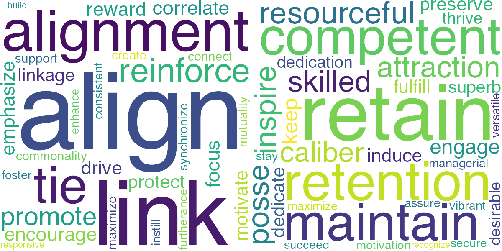

I am pursuing PhD in Finance at Washington University. I enjoy exploring how agency problems play out in shareholders' and managers' behavior. My recent research shows that having a stake in bonds matter for investor attention.
Bonds are an essential component of institutions’ portfolios, and we increasingly see the largest institutions (think Vanguard, BlackRock) being owners of both bonds and stocks in companies. Given that, it seems important to understand whether bond holdings of these large families influence how they monitor and vote on their equity investments, especially since bond investors are not generally thought to matter from a voting perspective. Our preliminary findings show that having a stake in bonds matter for investor attention. Specifically, we find that the institution's bond holdings in a firm, as a fraction of its overall total net assets, is positively associated with the institution not following ISS recommendation.
Presented at Financial Research Association Conference 2019
Compensation contracts incentivize and retain executives. However, the roles played by these factors have different theoretical repercussions for executive pay. Using natural language processing and unsupervised machine learning, we extract these features from SEC filings and test how these motives play out in observed compensation contracts. We are currently looking at how well the scores predict theoretical findings in compensation literature. Below we list top 20 words similar to align and retain, extracted via a shallow neural network (word2vec).
I love to be active, go out, and paint. These days, I am preparing for St. Louis Triathlon and aspiring to be a good chef. I follow comics-based shows and explore advancements in natural language processing.
I am thankful to Super30, Kendriya Vidyalaya, MPS Foundation, and Human Resource India for all the help. In my free time, I volunteer at nearby dog shelters and tutor as part of Each One Teach One program.